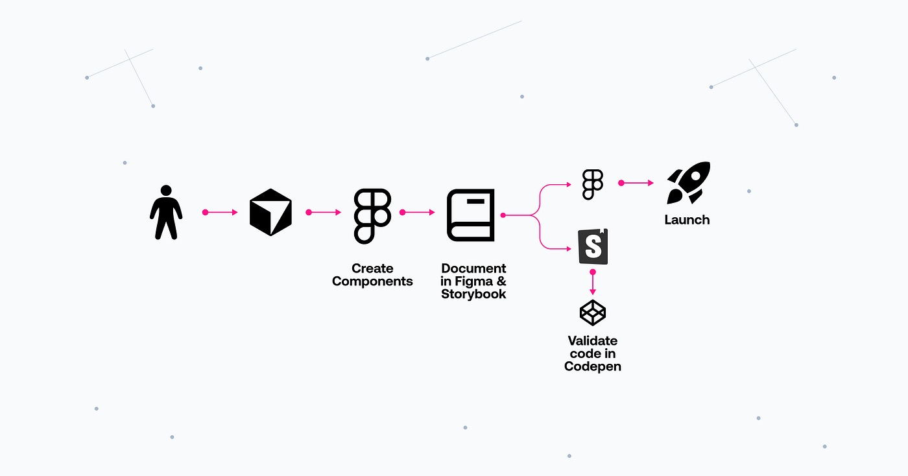
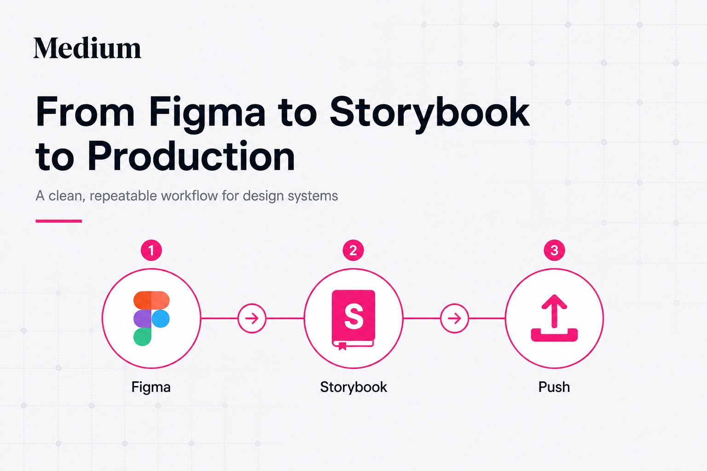
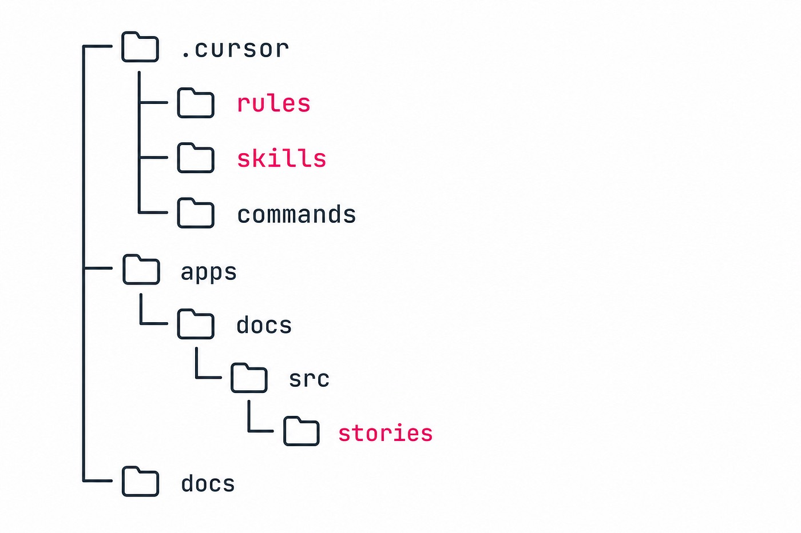
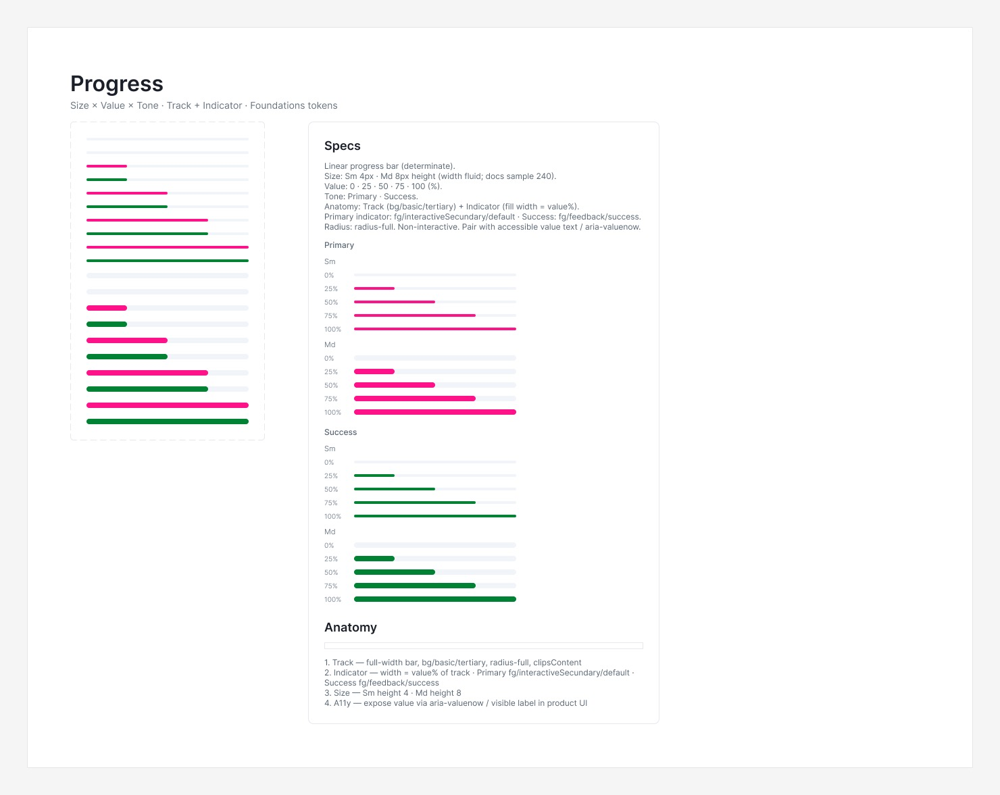
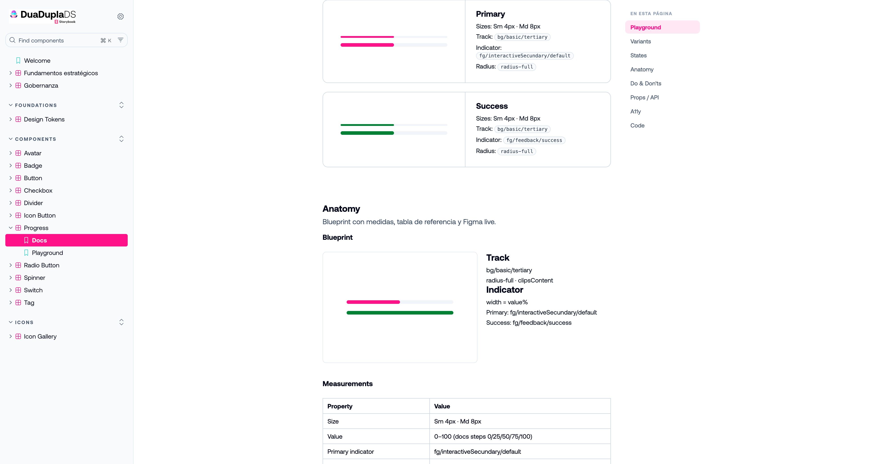
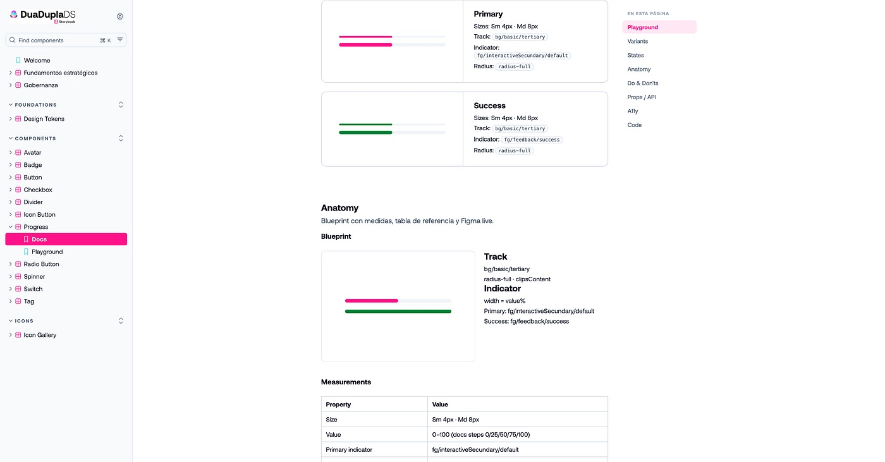
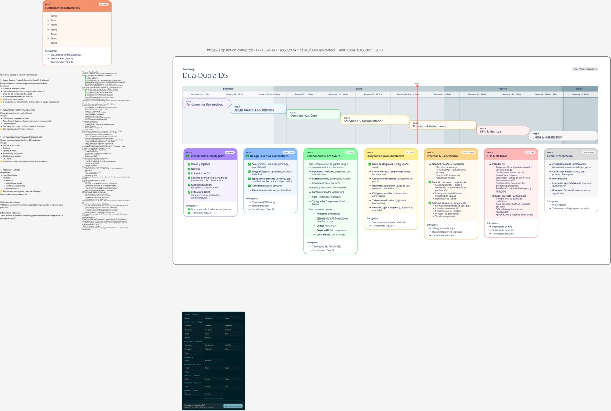
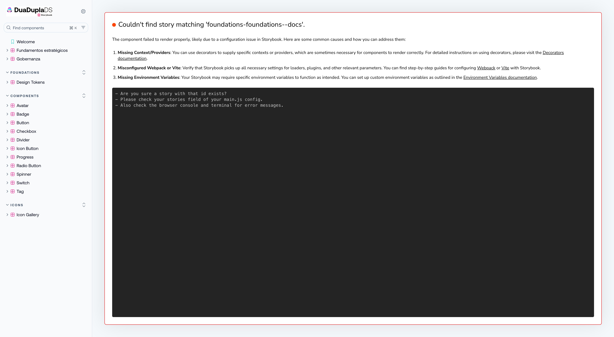
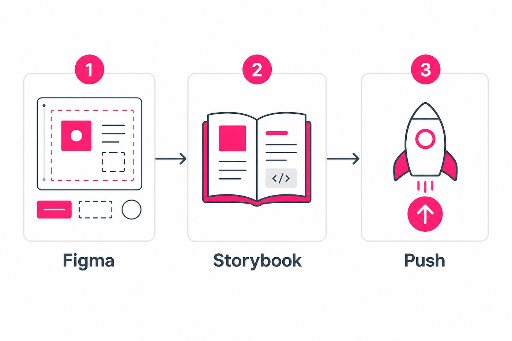

Dua Dupla DS

Descripción: Design System con un proceso de creación y documentación potenciado por IA, sin ceder el criterio humano.
Fecha: Nov 2025 – Ago 2026.
Rol: Product Designer & DesignOps. Ideé el sistema, escribí las rules y skills, diseñé Foundations y componentes en Figma, y monté la documentación en Storybook hasta producción.
Plataforma: Figma · Storybook (web) · asistente Gemini Notebook.
Metodología: DesignOps. Disciplina externalizada: tres frases, dos puertas humanas.
Herramientas: Figma MCP, Cursor, Storybook, CodePen, GitHub, Vercel, Gemini Notebook.
El problema
Un Design System no es un botón bonito. Son tokens en un solo sitio, componentes con variantes, documentación con anatomía, estados y accesibilidad, y un camino hasta producción.
Cuando trabajas con un asistente de código, el riesgo no es que no sepa CSS. El riesgo es que mezcle fases: dibuje en Figma, implemente en Storybook y suba a GitHub en el mismo suspiro, sin que hayas mirado nada.
Eso me pasó — o casi — las suficientes veces como para convertirlo en regla. Al mismo tiempo, el canal del equipo se llena de las mismas preguntas: «¿cuándo uso un Alert?», «¿cuál es el hex del Error?», «¿puedo poner dos button primary juntos?».
"No quiero un agente que lo haga todo solo. Quiero disciplina externalizada."
Propuesta de solución
La tesis es simple: la IA ejecuta; el humano decide. En Dua Dupla el flujo solo avanza con tres frases. Entre medias hay dos puertas humanas que no se saltan.

Tres frases. El modelo no termina el trabajo hasta que escribo la siguiente.
1. «Vamos con componente X»
Cursor + MCP de Figma diseña el component set y las specs en el archivo Components. No hace Storybook, ni commit, ni push.
2. «Documentar en Storybook»
Storybook local: Docs, Playground, tokens, a11y. CodePen se abre solo para validar el código generado frente a Figma. Tampoco hay push.
3. «Push»
Commit a GitHub + redeploy en Vercel. La documentación queda publicada para el equipo. Informe de coste del pipeline, si aplica.
Dos puertas humanas
- Validación de Figma — variantes, tokens enlazados, specs. Si falta un token, se decide en Foundations; no se hardcodea un hex en el componente.
- Validación visual — CodePen / Storybook vs Figma. Mismos tamaños, estados y variantes. Si no coincide, se corrige antes de seguir.
Las variables viven solo en el archivo Foundations. Components las consume; no las crea. Eso también está en código: CSS con tokens --ds-* mapeados al diccionario, no magia por componente.
El vídeo
Flujo completo creando el componente Alert: de la frase en Cursor al set en Figma, la documentación en Storybook, CodePen y el push a producción.
Creación del componente Alert · ~4 min
Proceso
Por debajo de las tres frases hay nueve fases. Las automáticas las ejecuta Cursor. Las humanas no se fusionan salvo que yo lo pida.
1. Orden
Yo nombro el componente. Sin nombre, el pipeline no arranca.
2. Figma (auto)
Component set + Specs/Anatomy en el archivo Components. Variables importadas desde Foundations. Spec actualizada en el repo.
3. Validación Figma (humano)
Reviso variantes, tokens y naming. Si hay que cambiar un color o una variante, se corrige aquí. No se pasa a Storybook.
4–5. Orden + Storybook (auto)
Docs + Playground, canvas blanco, stacked si el componente no cabe en ~320px, build en verde. Node-id de Figma vivos, no enlaces muertos.
6. CodePen + validación visual (humano)
Comparo el código generado con Figma. Solo entonces digo Push.
7–9. Push, GitHub/Vercel, coste (auto)
Commit, producción Ready, smoke de las stories críticas. Si hay spec nueva, el repo exporta markdown para el asistente.
El asistente del DS
Cuando hay componente o spec nuevo, el repo exporta un .md. Yo lo subo a Gemini Notebook — a mano. No hay API oficial; no fingimos magia ahí.
El equipo pregunta en el notebook en vez de saturar Slack. Las respuestas van ancladas al corpus y cierran con enlace a Storybook + Figma.
- «¿Cuándo uso un Alert?»
- «¿Cuál es el hex del Error?»
- «¿Puedo poner dos button primary juntos?»
No es un chatbot que improvisa. Es el corpus del sistema, consultable.
Qué es (y qué no es) un agente
Cuando digo agentes, me refiero a roles documentados que el asistente asume al leer un skill o un command — no a nueve procesos independientes tomando decisiones por su cuenta.
Lo que sí automatiza de forma útil: leer Figma vía MCP, crear variants con un patrón repetible, generar stories y CSS alineados a tokens, construir Storybook y empujar a GitHub/Vercel cuando lo pido.
Lo que no automatiza — y no debería —: decidir si el componente es el correcto para el producto, aceptar un contraste dudoso porque el build pasó, o publicar en ningún sitio sin que yo lo revise.
Resultados
- Un Design System vivo: Foundations + componentes en Figma, documentados en Storybook y desplegados en Vercel.
- Un pipeline repetible. Un componente nuevo es tres frases y dos validaciones, no un mega-prompt.
- Documentación consultable por el equipo (Storybook) y un asistente anclado al corpus, no a la memoria del chat.
- Participación honesta de IA y humano: la tabla no es «la IA lo hizo todo»; es quién decide en cada puerta.
- El proceso es el entregable reutilizable. Las rules y skills se pueden copiar a otro DS cambiando URLs de Figma y tokens.
Aprendizajes clave
- Escribir el proceso. Confiar en la memoria del chat no escala. Las rules y skills sobreviven a la conversación.
- Las puertas humanas parecen lentas. Evitan rehacer Figma, código y deploy a la vez.
- Nombrar el stack real. Si el repo es HTML + Storybook, se dice. No se vende un paquete React si aún no está.
- La IA se equivoca en detalles de diseño: tipografías, tokens mal enlazados, naming. El valor está en el bucle corto: captura → corrección → seguir.
- El Design System reutilizable es el proceso, no solo los botones.
Conclusión
Montar un Design System con IA no es sustituir al diseñador ni al desarrollador. Es externalizar la disciplina: el checklist que siempre olvidas, el «no mezcles fases», el «variables sólo en Foundations», el «no hagas push hasta que diga Push».
El sistema no es inteligente. Es insistente. Y, para un DS, insistir es casi todo.
Si quieres implementar un proceso de creación y documentación basado en IA como este en tu Design System, escríbeme.
Galería de diseño

Figma — specs de Progress (Size × Value × Tone)

Figma — section Progress en Components
Storybook — Docs de Progress

Storybook — página de Progress en producción

Foundations — las variables solo viven aquí

Figma — archivo Foundations

Storybook — Foundations

Repo — rules, skills y stories. El proceso vive aquí.